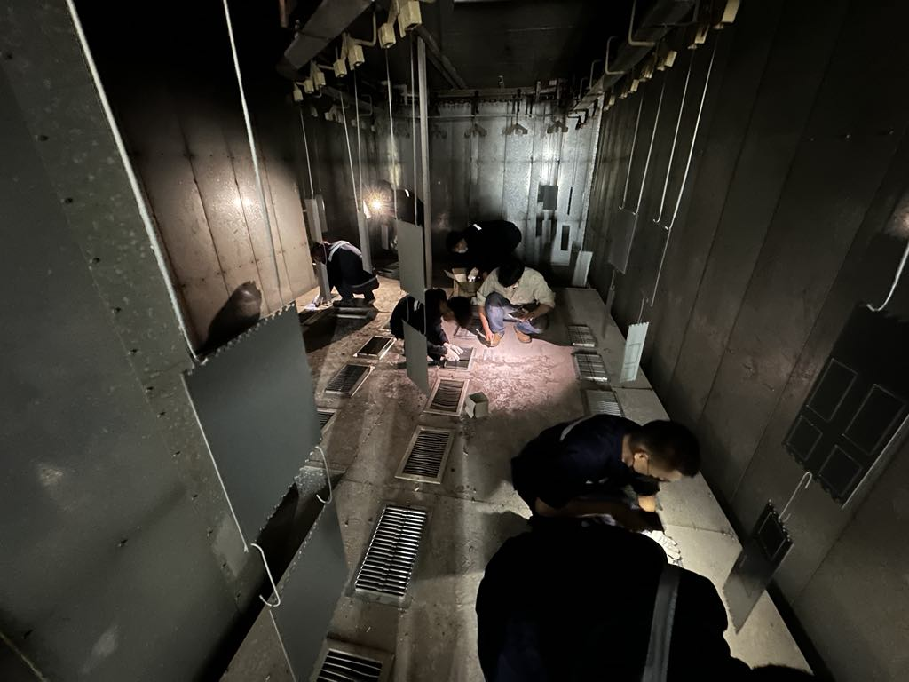
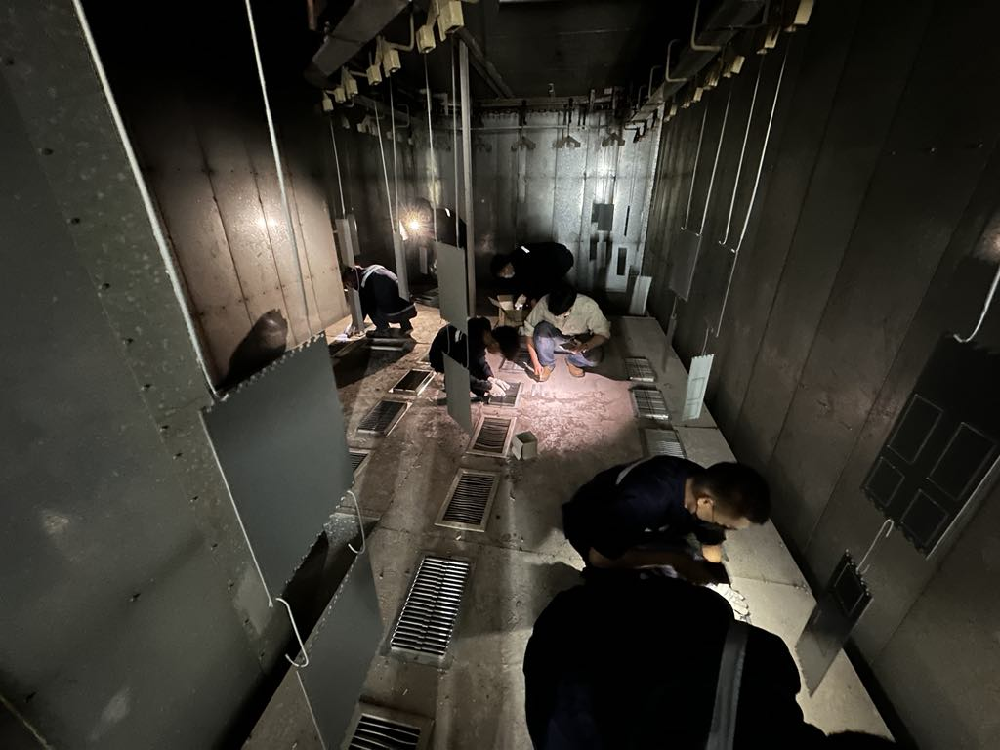

สวัสดี, ผมชื่อ กิตติคุณ วรนาม
วิศวกรรมการผลิตอัตโนมัติและหุ่นยนต์ | มีประสบการณ์ฝึกงาน 5 เดือน
ดูทักษะและผลงานเกี่ยวกับฉันและทักษะ
บัณฑิตจบใหม่จากมหาวิทยาลัยเทคโนโลยีสุรนารี คณะวิศวกรรมศาสตร์ สาขาวิศวกรรมการผลิตอัตโนมัติและหุ่นยนต์ มีความหลงใหลในการออกแบบและพัฒนาเทคโนโลยีอัตโนมัติ มีความกระตือรือร้นที่จะเรียนรู้สิ่งใหม่ๆ และนำความรู้ที่ได้จากการเรียนและประสบการณ์ฝึกงานมาประยุกต์ใช้เพื่อสร้างสรรค์ผลงานที่มีคุณภาพ กำลังมองหาโอกาสในการเริ่มต้นเส้นทางอาชีพในตำแหน่งวิศวกร เพื่อเติบโตไปพร้อมกับองค์กร
Hard Skills
CAD Software
SolidWorks (Advanced), AutoCAD (Intermediate)
การออกแบบ (Design)
Sheet Metal Design, Product Design, Jig & Fixture Design
การผลิต (Production)
Process Improvement, Lean Manufacturing (Basic), Quality Control (Basic), CNC Machining (Basic understanding)
โปรแกรมอื่นๆ (Other Software)
Microsoft Office Suite (Word, Excel, PowerPoint)
Soft Skills
- การแก้ปัญหา (Problem Solving): พัฒนาจากการวิเคราะห์และหาทางออกสำหรับปัญหาในสายการผลิต
- การทำงานเป็นทีม (Teamwork): ทำงานร่วมกับวิศวกรและพนักงานฝ่ายผลิตอย่างมีประสิทธิภาพ
- การสื่อสาร (Communication): นำเสนอข้อมูลและประสานงานกับผู้บังคับบัญชาและทีม
- ความละเอียดรอบคอบ (Attention to Detail): ในการวิเคราะห์กระบวนการและจัดทำเอกสาร
- ความรับผิดชอบ (Responsibility): รับผิดชอบงานที่ได้รับมอบหมายจนสำเร็จลุล่วง
- การปรับตัว (Adaptability): ปรับตัวเข้ากับสภาพแวดล้อมการทำงานจริงและเรียนรู้สิ่งใหม่ๆ ได้เร็ว
ประวัติการศึกษา
ปริญญาตรี - ปีที่สำเร็จการศึกษา 2567
มหาวิทยาลัยเทคโนโลยีสุรนารี
คณะ: วิศวกรรมศาสตร์
สาขาวิชา: วิศวกรรมการผลิตอัตโนมัติและหุ่นยนต์
ชื่อปริญญา: วิศวกรรมศาสตรบัณฑิต (วิศวกรรมการผลิตอัตโนมัติและหุ่นยนต์)
เกรดเฉลี่ยสะสม: 3.25
มัธยมศึกษาตอนปลาย - ปีที่สำเร็จการศึกษา 2563
โรงเรียนศึกษานารีวิทยา
แผนการเรียน: โครงการส่งเสริมความเป็นเลิศด้านวิทยาศาสตร์-คณิตศาสตร์ (Sci-Math Gifted)
เกรดเฉลี่ยสะสม: 3.36
ประสบการณ์ฝึกงาน
วิศวกรฝ่ายผลิต (ฝึกงาน), บริษัท อาซีฟา จำกัด (มหาชน)
5 หมู่ 1 ถ.พระราม 2 ต.คอกกระบือ อ.เมืองสมุทรสาคร จ.สมุทรสาคร 74000
ผลงานและความรับผิดชอบหลัก:
- วิเคราะห์และปรับปรุงกระบวนการผลิตตู้สวิตช์บอร์ดไฟฟ้าโดยใช้วัตถุดิบหลักคือ Sheet Metal
- ศึกษาและจัดทำเอกสารแนะนำการปฏิบัติงาน (Work Instruction) สำหรับกระบวนการผลิต
- ประสานงานกับทีมงานฝ่ายผลิตเพื่อเก็บข้อมูล, วิเคราะห์ปัญหา และนำเสนอแนวทางแก้ไข
- พัฒนาทักษะการแก้ปัญหาเฉพาะหน้าและการทำงานภายใต้แรงกดดันในสภาพแวดล้อมโรงงานจริง
ผลงานเชิงลึก
Hard Skills Showcase
โครงการปรับปรุงประสิทธิภาพห้องอบสีในสถานีพ่นสี
ในการฝึกงานที่อาซีฟา ผมได้รับโจทย์ให้แก้ปัญหาคุณภาพชิ้นงาน Sheet Metal ที่เสียหายหลังการอบสี ซึ่งเกิดจากตะแกรงระบายลมร้อนชำรุด แทนที่จะสั่งซื้อใหม่ในราคา 125,720 บาท ผมได้เสนอแนวคิดออกแบบและผลิตตะแกรงขึ้นเองโดยใช้วัสดุ Sheet Metal ที่มีในบริษัท ผลลัพธ์คือสามารถลดต้นทุนได้ถึง 103,105.84 บาท (82.02%) และยังได้เรียนรู้การออกแบบ JIG & Fixture เพื่อช่วยในการเชื่อมประกอบชิ้นงานให้แม่นยำยิ่งขึ้น
 


โครงการออกแบบเครื่องตรวจสอบและนับจำนวนด้ามไม้กอล์ฟ
ในโปรเจกต์วิทยานิพนธ์ ผมได้พัฒนาเครื่องตรวจสอบและนับจำนวนด้ามไม้กอล์ฟอัตโนมัติเพื่อลดการใช้พนักงาน 4 คน เครื่องต้นแบบสามารถตรวจสอบและจัดเรียงชิ้นงานได้แม่นยำ 100% แต่ยังพบข้อจำกัดด้านความเร็วในการตรวจสอบที่ช้ากว่าคน 0.6 วินาที และความแม่นยำในการนับที่ยังต้องปรับปรุงเนื่องจาก Sensor ไวต่อสีของชิ้นงาน ประสบการณ์นี้ทำให้ได้ฝึกฝนทักษะการออกแบบ การแก้ปัญหา และการประเมินผลอย่างเป็นระบบ

Soft Skills Showcase
เรื่องเล่าจากประสบการณ์: การแก้ปัญหาหน้างาน
"ในโปรเจกต์ออกแบบ Jig ชิ้นหนึ่ง พบว่าเมื่อผลิตออกมาใช้งานจริง มีชิ้นส่วนที่ประกอบไม่พอดีตามแบบ (ปัญหา) ผมจึงได้รวบรวมข้อมูลและปรึกษากับพี่วิศวกรและพี่ช่างหน้างาน (การทำงานเป็นทีม) เพื่อหาสาเหตุ ซึ่งพบว่าเกิดจากความคลาดเคลื่อนในการเชื่อมแผ่นโลหะ ผมจึงได้นำเสนอแนวทางแก้ไขโดยการปรับแก้ดีไซน์ของ Jig เล็กน้อยให้มีระยะเผื่อมากขึ้น (การแก้ปัญหา) และสื่อสารกับทีมผลิตอีกครั้งเพื่อให้เข้าใจตรงกัน (การสื่อสาร) จนสามารถนำ Jig กลับมาใช้งานและแก้ไขปัญหาได้สำเร็จ"
ติดต่อ
ผมมีความสนใจที่จะนำความรู้และทักษะมาประยุกต์ใช้และเติบโตในสายงานวิศวกรรม หากคุณมองหาคนรุ่นใหม่ไฟแรงเข้าร่วมทีม สามารถติดต่อผมได้เลยครับ
- Email : kittikun2544@gmail.com
- Telephone : 06 3421 2544